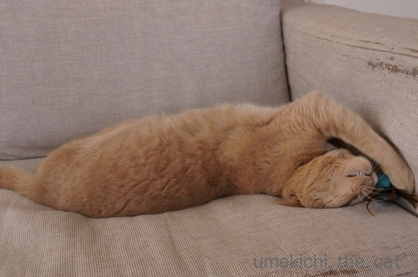
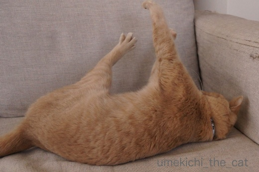
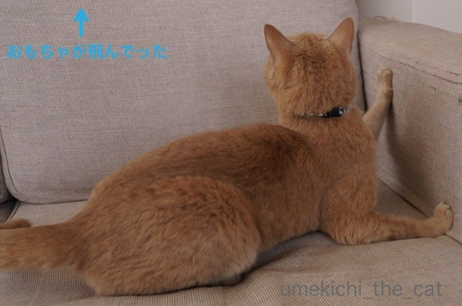
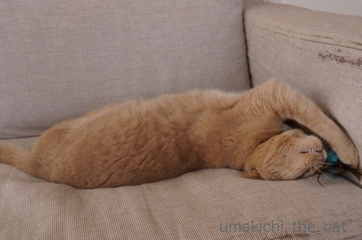
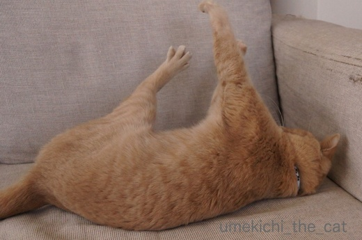
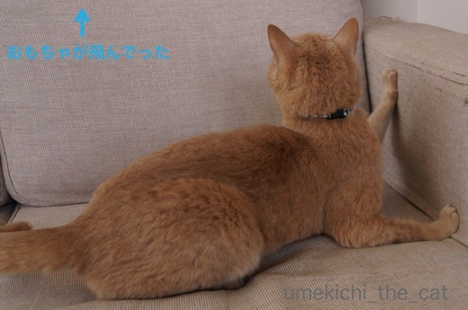

勝手に盛り上がられると少し寂しい [梅吉]
あれこれバタバタしている途中、ふっと見ると期待の眼差しで見つめるにゃんこが！

構って欲しくて強力ビームを出してます(^▽^;)
おかーさんもこう見えて結構忙しいのですがそんな目で見つめられるとねぇ・・・
じゃあ、少しだけお相手を。

久しぶりのおもちゃでお相手しますよ！

おお！良い食いつきっぷり。
気分が乗っているときは体のキレも抜群ですね＾＾

ちらキバどころか歯がむき出しなんですけど！

あの・・・そろそろおかーさんがおもちゃを投げましょうか？

![[猫]](https://blog.ss-blog.jp/_images_e/101.gif) わし いまいそがしいねん
わし いまいそがしいねん

![[exclamation×2]](https://blog.ss-blog.jp/_images_e/160.gif)

去っていくあち・・・・・
しばしお相手するつもりだったのに勝手に盛り上がっておかーさんおいてけぼり(꒦ິ⌑꒦ີ)
一人遊びに夢中になって構ってもらえないことってありませんか？
楽しそうだから良いんですけどねー。
でもおもちゃがソファの下などに入って取れなくなると呼びつけられますw
にゃんこの体内時計が初夏の訪れを告げているのでしょうか。

今年はじめての白目が観測されましたよ！！
 ↑ガブッと一押し↑
↑ガブッと一押し↑
2wほど前のことになりますが・・・
おっとが「こんなツイートした？」と聞いてきたので
スマホを見ると私のアカウントで衣料品の宣伝ツイートが。
あわてて自分のスマホでTwitterを開くと確かに私が投稿したことになっています。
Twitterは情報収拾のツールとして使っているだけで
ツイートなんてしていません。（ブログと連携しているので更新のツイートはされますが）
ましてや衣料品の広告ツイートなんて。
これが世に聞く「乗っ取り」かとあわててTwitterの『よくあるQ&A』をみると
「アカウントが乗っ取られた時は」という項目がありました。
よくあることなんかい！！！とキレつつも全てのデバイスからいったんログアウトをして
パスワードを変える、という対処をしました。
（こんな対処しか出来ないんですねー。あとは犯人への天誅を待つのみ？）
その間うす暗い部屋でパーカーのフードを被ったまま
たくさんのモニーターに囲まれながらキーボードを叩くハッカーと戦っている気分でしたよw
ちなみに私はお風呂上がりのパジャマ姿www
その後心当たりのないツイートはされていないので
さらなる被害は免れた様です。
ろくに使ってもいないSNSのアカウントが乗っ取られるなんてちょっとびっくりしました。
みなさんもあまりつかっていないSNSがあったら時々チェックした方が良いかもしれませんよー。
※乗っ取りツイート広告は開いていません。
どんなトラップがあるか分かりませんからね。こわいこわい。

構って欲しくて強力ビームを出してます(^▽^;)
おかーさんもこう見えて結構忙しいのですがそんな目で見つめられるとねぇ・・・
じゃあ、少しだけお相手を。

久しぶりのおもちゃでお相手しますよ！

おお！良い食いつきっぷり。
気分が乗っているときは体のキレも抜群ですね＾＾

ちらキバどころか歯がむき出しなんですけど！

あの・・・そろそろおかーさんがおもちゃを投げましょうか？



去っていくあち・・・・・
しばしお相手するつもりだったのに勝手に盛り上がっておかーさんおいてけぼり(꒦ິ⌑꒦ີ)
一人遊びに夢中になって構ってもらえないことってありませんか？
楽しそうだから良いんですけどねー。
でもおもちゃがソファの下などに入って取れなくなると呼びつけられますw
にゃんこの体内時計が初夏の訪れを告げているのでしょうか。

今年はじめての白目が観測されましたよ！！
2wほど前のことになりますが・・・
おっとが「こんなツイートした？」と聞いてきたので
スマホを見ると私のアカウントで衣料品の宣伝ツイートが。
あわてて自分のスマホでTwitterを開くと確かに私が投稿したことになっています。
Twitterは情報収拾のツールとして使っているだけで
ツイートなんてしていません。（ブログと連携しているので更新のツイートはされますが）
ましてや衣料品の広告ツイートなんて。
これが世に聞く「乗っ取り」かとあわててTwitterの『よくあるQ&A』をみると
「アカウントが乗っ取られた時は」という項目がありました。
よくあることなんかい！！！とキレつつも全てのデバイスからいったんログアウトをして
パスワードを変える、という対処をしました。
（こんな対処しか出来ないんですねー。あとは犯人への天誅を待つのみ？）
その間うす暗い部屋でパーカーのフードを被ったまま
たくさんのモニーターに囲まれながらキーボードを叩くハッカーと戦っている気分でしたよw
ちなみに私はお風呂上がりのパジャマ姿www
その後心当たりのないツイートはされていないので
さらなる被害は免れた様です。
ろくに使ってもいないSNSのアカウントが乗っ取られるなんてちょっとびっくりしました。
みなさんもあまりつかっていないSNSがあったら時々チェックした方が良いかもしれませんよー。
※乗っ取りツイート広告は開いていません。
どんなトラップがあるか分かりませんからね。こわいこわい。

カフェオレ色の梅吉

梅吉 2023年8月10日 永眠


梅吉と出会った譲渡会

犬猫の理由なき殺処分ゼロ
妄想広告
UMEKICHI 光

爆発的に早い！
時々攻撃的！
Thanks to Mr.Boss365
爆発的に早い！
時々攻撃的！
Thanks to Mr.Boss365

おぉ♪見事な強力ビーム！！
これは遊ばないわけにはいきませんね♪
って一人で盛り上がる（笑
でも見ててほしい気持ちがあるのかもしれませんね！
アカウントの乗っ取り！！
知り合いのもＦＢやラインを
乗っ取られていました！
気を付けてみないといけませんね！
by きぃ (2018-04-26 15:50)
仕事のことで頭が一杯なのに、近所の噂を聞かせたがるから、
仕方なく話を聞いてあげると、あ、ドラマが始まっちゃうわ！
と勝手に話を打ち切られちゃった夫の心境に似てるかも^_^;
梅吉様がアカウントを乗っ取った可能性はないのかな(^_^;)
by middrinn (2018-04-26 16:03)
梅吉さんのひねり技やお手手の開き具合が良いですね。そして何と言っても白目がサイコー!! 堪能させていただきました。
アカウントの乗っ取りって簡単にできるものなのでしょうか。最近よく聞きます。嫌ですねー。
by zombiekong (2018-04-26 16:05)
むき出しキバに萌え萌えです！
つんつんしたくなるー！盛り上がってますね、梅吉君^^
一人遊びに夢中になってること、ありますあります。
あおが一人遊びしてるときは、うみは見て見ぬふりしてますが
うみが一人遊びしてるときは、あおは参戦して嫌がられてますｗｗ
そのとき人間のことは無視ですよ^^;
可愛い白目いただきました。満足！！
Twitter、他のかたのブログでも乗っ取り記事を見たばかり。
普段は自分のTwitterなんてチェックしてないからたまには見ないとですね。
by リュカ (2018-04-26 16:13)
梅吉さん、お母さんに遊んで欲しかったんじゃｗ
一猫でキバ見せまでして盛り上がってくれる梅吉さんは
とても手のかからない良い子だと思いますが、
遊ぶ気だったお母さんが可愛そう^^;
うちは４にゃんもいるのに猫同士＆一猫で
遊んでくれることはほぼないです(-_-)
必ずかみさんにおねだりしてますが
かみさんの代わりに私が行くと解散します(T_T)
by ニッキー (2018-04-26 16:21)
キバも白目もサービス満点ですね。
わたしが変わって相手してあげたいです。
by 響 (2018-04-26 18:12)
この躍動感！たまりませぬ！！！
私もある日突然、このメールアドレスは誰かが使っているとかいう警告が来て、以後使えなくなっているという。。。おとろぴいです
by Ginger (2018-04-26 19:15)
白目の梅吉さんが狐みたいに見えてしまいました(^^;)
by kou (2018-04-26 19:35)
梅吉さん、最後は落ちちゃいましたね！
僕はインスタのアカウントを取られそうになって慌ててパスワード変えました(^^)
by ma2ma2 (2018-04-26 20:37)
一人遊びの梅吉さん、ツボに入ってますね（笑）
切れ味の良いスタイルで、高いところに自分で投げて取りに行ったのでしょうか。
可愛いあちだけ残して、飛んじゃったのですね。
Twitter、ほとんど見ないので今削除しました。
by kiki (2018-04-26 22:07)
梅吉さんは、はっきり言って盛り上がり過ぎです(^^;
思いっきり楽しむんですね。
最高です(^^)
by riverwalk (2018-04-26 23:27)
キターー（ ゜∀ ゜）ーー！かまって光線！
これはもう放置できないですよね。
（わたしの母は非情なので、転がってお腹見せていても無視します^^;）
・・・あれ。でも対応が違う^^;
やっぱり、若いと、おもちゃへのとっつき具合も違いますな。
えっ、白目って初夏の合図なのですか〜（＇д＇）
by Ja-Kou66 (2018-04-27 00:15)
うちは仲間うちで解決してくれるので
この点は楽ですね。
ターゲットにされた子は気の毒ですが＾＾
白目の梅吉さん、いつ見ても良いですね。
Twitterが乗っ取られた話は
他の方でも見ましたよ。
ソネブロと無関係だと良いのですが＾＾；
by ぽちの輔 (2018-04-27 06:35)
視線が～♪
おお、梅吉さん、躍動感溢れる動き！すっごく楽しそう～～＾＾
‥あれっ、盛り上がりすぎ‥どっかへ～？
今年はじめての白目とは。
夏の風物詩だったのですか！？
SNSやってないので何も知りませんけど～よくあることなんだ？
ツイッターはいざというときのために作っておいたほうが良いかなって思ってますが、いまだに‥。色んなことありますねえ‥大変＾＾；
by sana (2018-04-27 18:49)
去っていくあち ナイスショットです(#^^#)こういうのだい好き!(^^)!
by palpal (2018-04-27 19:55)
おお！強烈なビーム！！
これは見過ごすわけには行きませんね。^^;
アカウント乗っ取り、気をつけたいですね。
by yes_hama (2018-04-27 21:31)
構って～とやって来たのに、ちぃさん置き去りで飛び去る梅吉さんの後ろ足が最高です♪
ウチのは飽きっぽいので、気が付くと猫じゃらし振り回しながら暴れてるのは私だけ、はよくあります(^▽^;)
アカウント乗っ取り嫌ですね。
twitterほとんど使ってないのですが油断できませんね。
ねこじゃすり、ニャンコに舐められるより痛いしかたいし、あったかくないです^^;
by ゆきち (2018-04-27 21:55)
梅吉さんビーム、強烈〜♡
でも、こんなに誘っておきながら、最後は置き去り･･･ 主も猫よのう(^.^)
アカウント乗っ取りなんて、あるんですね。。
私もまったく使っていないtwitterのアカウントあるわ･･･ふぇぇ(/_;)
by のらん (2018-04-28 08:15)
わかる～！！転がるタイプのおもちゃは置いてきぼりにされがちｗ
そして、どこかに潜り込んで取れなくなった時に「ね～～」って呼ばれるの。
あんなに可愛いお目目で誘ってたくせに・・・。
梅吉くんの今年初の白目が観測されたのですか！温かい時期限定だったのね。
今年もしばらく楽しませていただきます(*^-^*)
SNS乗っ取りは経験がないんだけど、そんな目にあったら怖いよね。
私はSNSはあまりやってないんだけど、詐欺メールや迷惑メールは頻繁に届くし。
他人ごとではないよ。
by emi (2018-04-28 19:00)
きぃさん＞
見てて欲しい気持ち・・・だったらかわいいのですが
何も目に入っていない様で存在すら気づかれていないです (⌒_⌒;
アカウントの乗っ取りはヘビーユーザーや若者に起きるもの
と思っていたのでびっくりしました。
パスワードの定期的な変更ってやっぱり必要なのかな・・・
middrinnさん＞
そうそう (⌒_⌒;世のせつない男性の気持ちがわかったかも〜！
梅吉、なかなかのMacジーニアスなので
乗っ取りの可能性は捨てきれませんよwww
でも梅吉の乗っ取りツイートはカリカリとかおもちゃの
広告になりそうなんですが(*>艸<)
zombiekongさん＞
今年初の白目、お待たせいたしましたm(_ _)m
今年もたくさん白目むいてくれるといいな♬
アカウントの乗っ取り、誰がどんな目的で？が謎なので
余計に不気味です・・・こわっ！
リュカさん＞
リュカさんはキバ見ると必ずつんつんなのですねーＯ(≧▽≦)Ｏ
私もやっちゃうけどw
あのコツコツした感触がたまりませんよね＾＾
一人遊びしてくれるならそれで良いんだけど
途中から参加してほしそうなビーム出したりして
結構めんどくさい男なのよ、梅吉www
ツイッターに使っていたパスワードは
個人情報を推測できるものではなかったのですが
ちょっと単純すぎたかな・・・と反省もしています。気をつけなきゃ！！
ニッキーさん＞
遊んでほしそうだったからおもちゃを振り回してがんばっていたら
「あほちゃうか・・・」と冷たい目で見られることも・・・
遊ばないんだな、とおもちゃを置いて立ち去ると
一猫で遊び始める、もよくあるパターンです(꒦ິ⌑꒦ີ)
これはニッキーさんの解散パターンと同じくらい
ダメージがあるかとwww
響さん＞
ブログネタとしては満点でしたよー（笑）
飽きっぽい梅吉、ぜひぜひ響さんにお相手をお願いしたいです！！
GIngerさん＞
ええっΣ(ﾟ◇ﾟ；)メールアドレスまで・・・
油断のならない世の中ですね。ほんと、おとろぴいです(-_-メ)
とりあえず作ったフリーのメールアドレスも
時々確認してみなくっちゃ・・・
kouさん＞
ほんとだー！！お稲荷さんの鳥居の前にいそうです＾＾
赤い前垂れ付けなきゃ(*>艸<)
ma2ma2さん＞
インスタにFBにLINEにTwitter、乗っ取られないものはない！ですね(-_-メ)
kikiさん＞
遊んで欲しいとき、一人遊びがしたいとき
見極めがなかなか難しいですw
梅吉は夢中になると周りが全く見えなくなるので
自分で弾き飛ばしたおもちゃを追って
私を置き去りにしていきましたよー。
Twitter、使われていないなら削除が正解かもしれませんね。
riverwalkさん＞
盛り上がると歯止めが効きませんー！
でも思いっきり盛り上がって遊んでいるのは
見ていても楽しいですよ♪
by ちぃ (2018-04-29 15:19)
キバ見せで、遊んでる～♪
梅吉さん、楽しく一人遊びも盛り上がれるコなんですね♡
いいな～＾＾
あかりは、甘えてるからやっぱり私を誘います＾＾；
Twitter、私も情報集めのために始めようかな～と
思ってたところですが、そんなことがあるなんて…(>_<)
便利な反面、こわいこともあるんですね。
ちぃさん迅速な対処で、良かったです＾＾
by マーヤ (2018-04-29 22:29)
Ja-Kou66さん＞
幼い頃はおもちゃを見ただけでも
ちょっと揺らしただけでも食いついてきたのですが
最近は面白いように工夫しないと食いつきが悪くなりました(^▽^;)
「おかーさん つまらん」とばかりにおもちゃを奪って
一人遊びを始めることも・・・辛いわぁ。
梅吉はなぜか暑くなると白眼がちになるのですwww
ぽちの輔さん＞
猫同士で遊ぶ姿もいいなぁ・・・
私も仲間に入れてよーと割って入りたくなりそうですがwww
ツイッター乗っ取られ、ソネブロガーの方に多いとか！？
また怪しい動きがあったらツイッターとブログの連動は
やめようかな・・・
sanaさん＞
自分で弾き飛ばしたおもちゃを追って行ってしまいましたwww
私は一人取り残されてぽつーんと・・・
梅吉は暑くなるとなぜか白眼がちになるのです。
不思議なんですよねー(*>艸<)
災害時の情報取集はツイッターが便利と聞いて
東日本の震災の時にアカウントを作ったのですが・・・
パスワードが簡単すぎたせいもあったかもしれません。
今度はめっちゃ複雑にしたので大丈夫かな、と思っています＾＾
palpalさん＞
ナノくんの平行移動するおしっぽと同じ感覚ですね！
ちらっと見えが猫変態ごころをくすぐりますw
yes_hamaさん＞
梅吉のビームは強力で背中に浴びせられると
思わず振り向いちゃいますw
ツイッター、今度はパスワードを複雑にしました。
ハッカー、かかってこい！！って感じです(*>艸<)
ゆきちさん＞
あります！あります！一人興奮する飼い主(*>艸<)
「じぶん、何やってるんだろう・・・」って笑えてきますよねー。
ねこじゃすり、やすりだけあってやっぱり固いのですね。
爪、割れちゃわないようにお気をつけくださいませm(_ _)m
のらんさん＞
置き去りにされても楽しそうに遊ぶ梅吉を見てニヤニヤする
真性下僕なので良いんです・・・たまに遊んでくれるから・・・
おばちゃんのアカウント乗っ取ってどうするのー！
って感じですwww
でも気味が悪いことこの上ないです。。。
emiさん＞
そうそう！わざとでしょ？ってくらいに取れないところに入れますよね！！
呼びつけて取ってもらうのもお遊びのうちなのかな(^▽^;)
もちろん下僕なのでいそいそと取りに行きますけどw
梅吉の白眼は暑い時期に頻発するのです。
なんでだろ〜(*>艸<)
変なメールも嫌ですね。送りつけられただけで不愉快なのに
相手がなんらかの個人情報を知っているんじゃなか・・・って
疑心暗鬼にもなるし。
お互い色々気をつけなきゃ！嫌な世の中だねー。
マーヤさん＞
頻度は少ないですが一人遊びも出来ますよー＾＾
楽しそうに遊んでいてくれると（無視された後でも）
よかったなって思います＾＾
アカウント乗っ取り、何の為にしているのかわからないので
余計に不気味です。
もう一度乗っ取られたらやめちゃうかも・・・
とりあえずパスワードを複雑にしたので大丈夫とは思いますが。
マーヤさんも始める際はお気をつけてくださいませm(_ _)m
by ちぃ (2018-04-30 15:19)